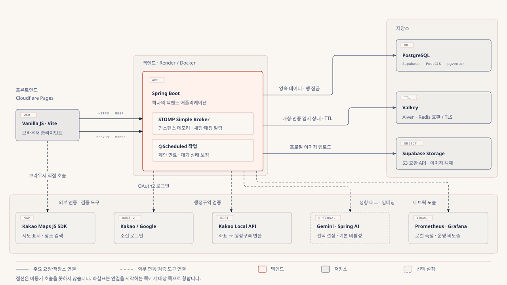

실시간 매칭
600회 검증
매칭 확정 경로의 잠금 순서를 제안 → 요청 ID 오름차순으로 통일했습니다. 프로젝트 종료 후 실제 PostgreSQL 경합 6종을 각 100회, 총 600회 검증해 중복 매칭·상태 불일치·데드락·타임아웃 0건을 확인했습니다.
사례 01 보기지역·시간·식사 취향·대화 성향을 바탕으로 오늘 함께 식사할 한 사람을 연결하는 실시간 1:1 매칭 서비스입니다. 매칭 요청, 후보 제안, 양쪽 수락, 채팅, 후기까지 이어집니다. 매칭 전 과정을 담당하며, 동시에 들어오는 응답 속에서도 매칭이 한 번만 확정되도록 하고 PostgreSQL과 Valkey의 대기 상태를 맞추는 구조를 구현했습니다.
600회 검증
매칭 확정 경로의 잠금 순서를 제안 → 요청 ID 오름차순으로 통일했습니다. 프로젝트 종료 후 실제 PostgreSQL 경합 6종을 각 100회, 총 600회 검증해 중복 매칭·상태 불일치·데드락·타임아웃 0건을 확인했습니다.
사례 01 보기205건 보정
PostgreSQL을 기준으로 누락된 Valkey 대기 정보를 복구하거나 요청을 만료시킵니다. 프로젝트 종료 후 실제 Valkey 재시작으로 정보를 유실시킨 205건을 복구 102건·만료 103건으로 처리해 미처리 0건을 확인했습니다.
사례 02 보기팀 프로젝트의 구현 설명은 기준 커밋 310120e를 따릅니다. 프로젝트 종료 후 추가한 2026-11-05 검증은 개인 저장소의 ee7d2ba를 기준으로 별도 표기했습니다. 후보 선정은 본인 구현 시점(PR #55)과 후속 팀 변경을 구분했습니다.

핵심 사례 01
한 사용자가 매칭 제안을 수락하는 순간, 상대방이 거절하거나 대기를 취소할 수 있습니다. 응답 기한인 180초(3분)가 끝날 무렵에는 수락과 서버의 만료 처리가 겹칠 수도 있습니다. 각 작업이 서로의 처리 결과를 확인하지 않고 저장하면 취소한 제안이 매칭으로 확정되거나, 같은 제안에서 매칭이 두 번 만들어질 수 있습니다. 또한 같은 요청이 포함된 두 제안이 동시에 확정되면 한 사람이 두 매칭에 묶일 위험이 있습니다. 실제로 겪은 장애가 아니라, 설계 단계에서 예상하고 대비한 상황입니다.
PESSIMISTIC_WRITE 잠급니다. 요청에서 출발하는 대기 취소도 제안 경로로 넘겨 같은 순서를 따릅니다. 잠근 뒤에는 엔티티를 다시 읽어 최신 상태로 판정합니다.| 경로 | 시작 | 잠금 순서 |
|---|---|---|
| 후보 제안 생성 | 후보 탐색 | 두 요청 (ID 오름차순) |
| 수락·거절 | 사용자 응답 | 제안 → 두 요청 (ID 오름차순) |
| 만료 | 스케줄러 | 제안 → 두 요청 (ID 오름차순) |
| 대기 취소 (제안 있음) | 사용자 취소 | 제안 → 두 요청 (ID 오름차순) |
| 대기 취소 (제안 없음) | 사용자 취소 | 요청 하나, 잠근 뒤 제안 생성 여부 재확인 |
| 방식 | 이 흐름에서의 장점 | 비용·한계 |
|---|---|---|
| 비관적 락 (적용) | 경쟁 범위가 제안 1건과 요청 2건으로 좁습니다. 뒤에 온 요청은 앞선 트랜잭션이 끝날 때까지 기다린 뒤 확정된 상태를 다시 읽고, 기존 결과를 돌려줄지 409로 응답할지 바로 판단합니다. | 잠금 대기가 생깁니다. 경로마다 잠금 순서가 다르면 교착이 생길 수 있어 모든 경로의 순서를 맞춰야 합니다. |
낙관적 락 (@Version) | 대기 없이 진행하고 충돌을 커밋 시점에 감지합니다. | 충돌에서 진 쪽이 어떤 응답을 받아야 하는지 알려면 다시 읽고 재시도하는 경로가 필요합니다. 만료 스케줄러에도 같은 처리가 필요합니다. |
| Valkey 분산 락 | DB 밖에서 여러 서버의 진입을 막을 수 있습니다. | 상태와 제약은 PostgreSQL에 있어 락 해제와 DB 커밋 시점을 따로 맞춰야 하고, 락 TTL이 트랜잭션보다 먼저 끝날 수 있습니다. 매칭 확정이 Valkey 가용성에도 의존하게 됩니다. |
개인 저장소의 검증 기준 커밋 ee7d2ba에서 실제 PostgreSQL의 독립 트랜잭션 두 개를 경쟁시키는 6개 시나리오를 각각 100회 실행했습니다. 각 반복이 끝나면 매칭·참여자·채팅방 수와 요청·제안 상태, 한 요청의 중복 매칭 여부를 검사했습니다.
| 시나리오 | 실행 | 성공 |
|---|---|---|
| 양쪽 사용자 동시 수락 | 100회 | 100회 |
| 매칭 후 동일 수락 중복 재시도 | 100회 | 100회 |
| 하나의 요청을 공유하는 경쟁 제안 | 100회 | 100회 |
| 수락·거절 경합 | 100회 | 100회 |
| 수락·취소 경합 | 100회 | 100회 |
| 수락·만료 처리 경합 | 100회 | 100회 |
| 합계 | 600회 | 600회 |
결과: 600회에서 중복 매칭·상태 불일치·데드락·타임아웃과 예상하지 못한 작업 오류가 모두 0건이었습니다.
검증 조건과 범위: Windows의 로컬 Docker 환경(PostgreSQL 17.10), DB 연결 풀 최대 3개, 작업 스레드 2개로 실행했습니다. 600회는 시나리오 반복 횟수이며 동시 접속자 수가 아닙니다. 서비스 계층의 DB 정합성 검증으로 캐시와 WebSocket은 mock을 사용했습니다. 수락·만료 경합은 이미 기한이 지난 제안에서 확인했으며, 수락 완료와 만료 경계의 모든 순서나 HTTP 409 응답·화면 갱신까지 검증한 것은 아닙니다.
최신 검증 근거: 측정 보고서, 600회 동시성 테스트, 실행 스크립트
잠금의 효과를 확인하기 위해 기존 기준 커밋 310120e와 잠금을 제거한 버전을 비교했습니다. 아래 결과는 최신 600회 검증과 별도로 수행한 실험입니다.
| 조건 | 실행 | 결과 |
|---|---|---|
| 기준 코드 | 21회 | 21회 모두 6개 시나리오 통과 |
| 제안 행 잠금만 제거 | 10회 | 10회 모두 실패. 동시 수락에서 한쪽 결정이 덮어써져 매칭이 만들어지지 않고 제안이 PENDING에 멈췄습니다. 일부 실행에서는 거절·취소도 유실됐습니다. |
| 제안·요청 잠금 모두 제거 | 10회 | 10회 모두 실패. 결정 유실에 더해 같은 제안의 매칭을 두 번 저장하려는 시도(4회)와 한 요청을 두 매칭에 쓰려는 시도(10회)가 생겼고, 매칭 테이블의 UNIQUE 제약이 이를 거부했습니다. |
이전 검증 조건과 범위: 2026-10-31 로컬 Docker 환경(PostgreSQL 16, 기준 커밋 310120e)에서 6개 시나리오 묶음을 21회 실행하고, 잠금을 제거한 두 버전을 각각 10회 실행했습니다. Valkey·WebSocket은 mock이며 HTTP 409 변환과 화면 재조회는 코드로 확인했습니다. 이 이전 테스트의 작성과 실행에는 Claude Code를 활용했습니다.
잠금 대기 시간 상한(lock timeout)을 설정하지 않아, 잠금을 쥔 트랜잭션이 길어지면 기다리는 요청도 함께 묶입니다. 대기 상한과 그때의 실패 응답을 정하는 것이 다음 과제입니다.
핵심 사례 02
DB에 요청이 저장되어도 Valkey 등록이 누락되거나, DB에서 매칭이 확정되어도 대기 키 삭제가 실패할 수 있습니다. PostgreSQL 트랜잭션만으로 Valkey 쓰기까지 함께 커밋할 수 없으므로, 어느 상태를 기준으로 복구할지와 실패 시 처리 순서를 정해야 합니다.
요청·제안·매칭은 채팅방과 후기가 참조하는 기록이며, 사례 ①의 행 잠금과 트랜잭션으로 상태 전이를 보호합니다. 반면 Valkey 대기 키는 TTL로 사라지는 것을 전제로 둔 값입니다. 그래서 두 저장소가 어긋나면 PostgreSQL을 기준으로 Valkey를 맞춥니다. 잠시 어긋날 수 있다는 비용은 남기고, 보정 작업으로 그 시간을 줄이는 구조입니다.
SET NX와 예약 토큰으로 사용자 키를 선점한 뒤 DB에 요청을 저장하고, DB 커밋 전에 Lua로 대기 키와 위치 등록을 함께 활성화합니다. DB가 롤백되면 요청 ID가 일치하는 키만 정리하고, 예약 해제도 토큰이 같을 때만 수행해 다른 요청의 키를 지우지 않습니다.WAITING 요청을 100건씩 순회합니다. 요청마다 별도 트랜잭션에서 행을 잠근 뒤 아래 표에 따라 처리합니다.| 상태 | 처리 |
|---|---|
| 최초 대기 등록 뒤 DB 롤백 | 요청 ID가 일치하는 Valkey 키 정리 시도 |
DB는 WAITING, 대기 키 누락, 대기 시간 남음 | 남은 TTL로 대기 키와 위치 등록 복구 |
DB는 WAITING, 대기 키 누락, 대기 시간 경과 | DB 요청 만료 후 Valkey 정리 |
| Valkey 조회 실패 | DB 상태를 유지하고 다음 순회에서 재시도 |
개인 저장소의 ee7d2ba에서 실제 PostgreSQL·Valkey를 사용해 대기 정보 삭제, TTL 만료, 컨테이너 중단·재시작과 반복 보정을 검증했습니다. 테스트마다 대기 요청 205건과 비대기 상태의 비교 요청 4건을 새로 만들었습니다.
| 상황 | 대기 대상 | 복구 | 만료 | 미처리·보류 |
|---|---|---|---|---|
| 대기 키 삭제 후 보정 | 205건 | 205건 | 0건 | 0건 |
| Valkey TTL 만료·DB 대기 시간 경과 후 보정 | 205건 | 0건 | 205건 | 0건 |
| Valkey 중단 중 보정 | 205건 | 0건 | 0건 | 205건 |
| Valkey 재시작 후 보정 | 205건 | 102건 | 103건 | 0건 |
누락 정보 복구와 만료 처리는 100 → 100 → 5건의 배치로 전체 요청을 순회했습니다. 장애 중에는 205건의 DB 상태·수정 시각을 유지하고, 재시작 후 남은 대기 시간이 있는 102건을 복구하고 시간이 지난 103건을 만료 처리했습니다. 별도 반복 보정 실험에서는 전체 205건을 최초 복구한 뒤 배치를 9회 더 호출해, 전체 요청을 3차례 더 순회해도 신규 보정 0건과 기존 만료 시각·DB 수정 시각이 유지됨을 확인했습니다.
검증 조건과 범위: Windows의 로컬 Docker 환경(PostgreSQL 17.10·Valkey 8.1.9), 명령 타임아웃 200ms에서 실행했습니다. 스케줄러 초기 지연을 1시간으로 설정하고 보정 메서드를 직접 호출했습니다. DB 대기 시간 경과는 기록 시각을 301초 이전으로 설정하고 Valkey 키는 실제 2초 TTL로 만료시켰습니다. 검증 버전에는 Redis 명령 타임아웃 설정을 Lettuce에 반영한 수정이 포함됩니다. 각 복구 시나리오는 1회 측정한 결과로, 운영 환경의 복구 시간이나 WebSocket 알림 전달까지 보장하지 않습니다.
최신 검증 근거: 측정 보고서, 실제 Valkey 복구 테스트, 실행 스크립트
두 저장소를 함께 커밋하지 않으므로 일시적인 불일치는 남고, 순회량과 장애 지속 시간에 따라 복구가 5초보다 늦어질 수 있습니다. 보정 대상은 WAITING 요청의 누락된 키입니다. 종료된 요청의 잔여 키는 TTL과 만료된 위치 등록 정리에 맡기며, WebSocket 알림 유실은 보정 범위에 포함되지 않습니다.
ST_DWithin)과 식사 시간 30분 이내 조건을 먼저 확인한 뒤 성향 점수를 계산했습니다. 태그와 자유 서술 임베딩 점수를 80:20으로 결합하고, 제안 시점의 양방향 점수·근거·산식 버전을 함께 저장했습니다. 본인 구현(PR #55)은 양방향 점수 중 낮은 값을 기준으로 정렬했고, 이후 팀원 PR #74에서 요청자→후보 점수 정렬과 다중 임베딩 계산으로 바뀌었습니다. (양방향 조건 필터, 본인 구현 시점의 후보 선정, PR #55, 후속 팀 변경 #74)(2.5 + 확실히 다시 + 0.5 × 아마도 다시) / (5 + 유효 후기 수) × 100으로 계산하며 산식 버전을 관리합니다. 수식상 가상 후기 5건을 반영해 소수 후기의 점수 영향을 완화합니다. (후기 작성, 지수 산식, PR #61)GETDEL로 조회와 삭제를 한 번에 수행하며, 코드를 소비한 뒤 활성 회원인지 확인하고 토큰을 발급합니다. (교환 코드, 토큰 교환, PR #24)